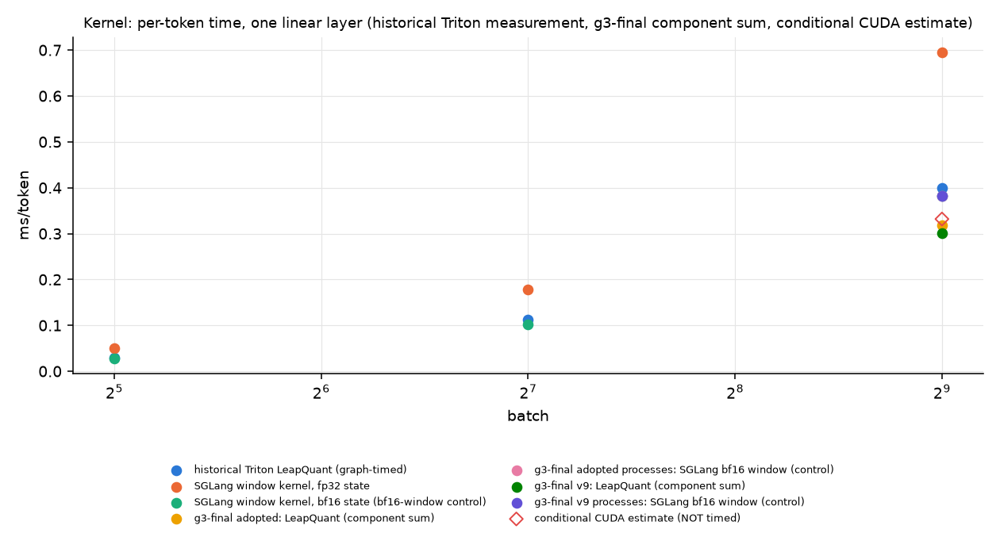
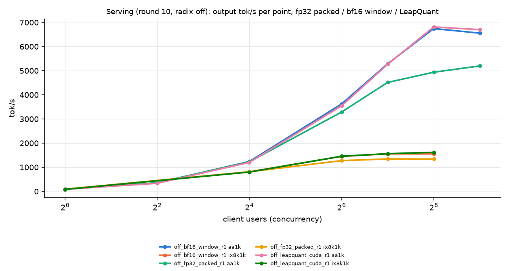
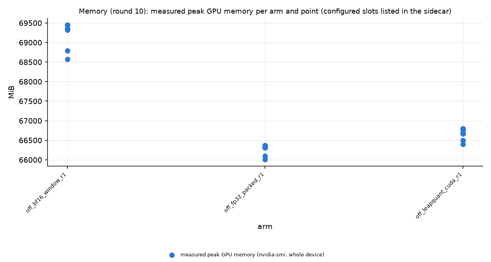
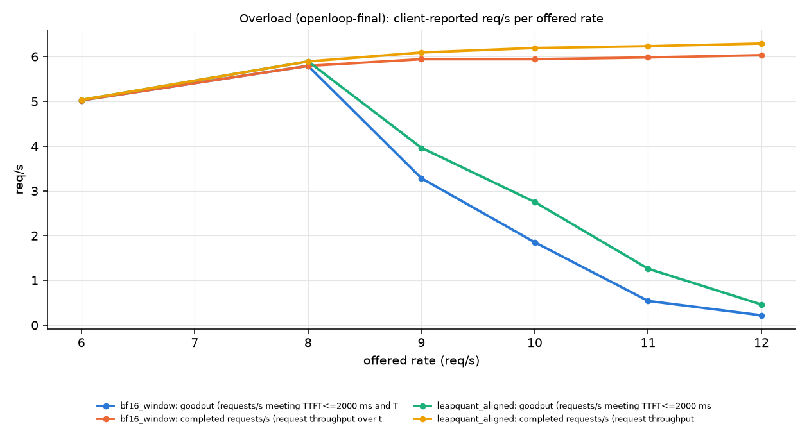
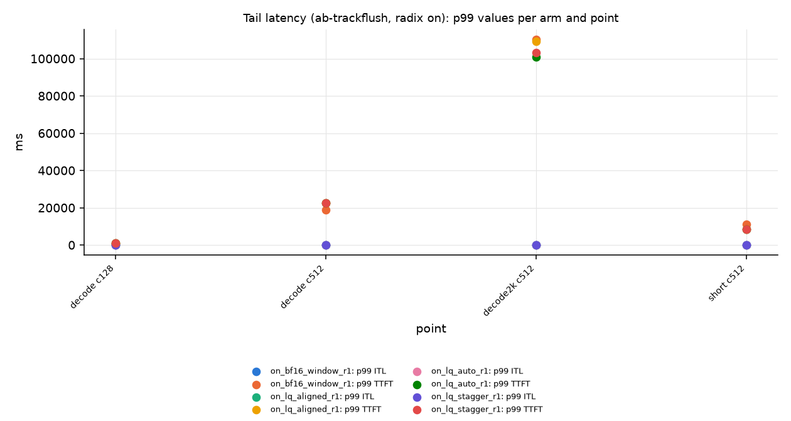
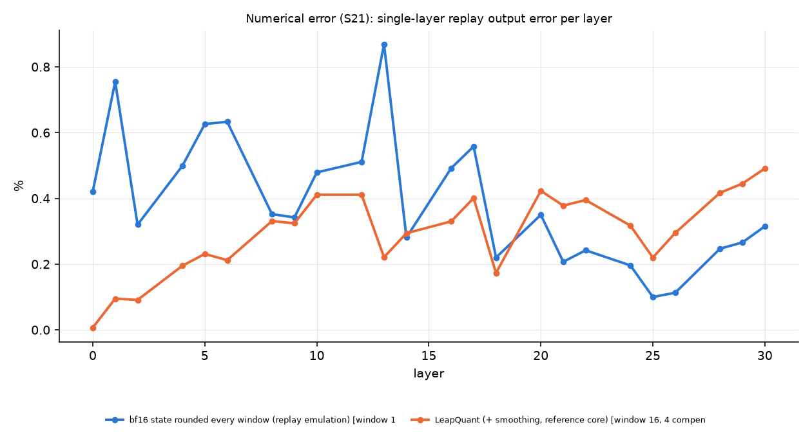

14 of 14 points plotted · evidence kinds: derived_from_reported, measured_raw · sidecar hist_kernel.json (every point with source line, experiment, boundary, class, derivation) · data sha256 cd3fb06c7748e9f7… · sidecar problems: 0
36 of 36 points plotted · evidence kinds: measured_raw · sidecar hist_workload.json (every point with source line, experiment, boundary, class, derivation) · data sha256 8f370ffa672db865… · sidecar problems: 0

36 of 36 points plotted · evidence kinds: measured_raw · sidecar hist_serving.json (every point with source line, experiment, boundary, class, derivation) · data sha256 c4c91ca303d31f6f… · sidecar problems: 0

36 of 36 points plotted · evidence kinds: measured_raw · sidecar hist_memory.json (every point with source line, experiment, boundary, class, derivation) · data sha256 03613ace485b86f0… · sidecar problems: 0

24 of 24 points plotted · evidence kinds: measured_raw · sidecar hist_overload.json (every point with source line, experiment, boundary, class, derivation) · data sha256 fa6fb752b5c00848… · sidecar problems: 0

32 of 32 points plotted · evidence kinds: measured_raw · sidecar hist_tail.json (every point with source line, experiment, boundary, class, derivation) · data sha256 19a0751729043967… · sidecar problems: 0

48 of 48 points plotted · evidence kinds: measured_raw · sidecar hist_numerical.json (every point with source line, experiment, boundary, class, derivation) · data sha256 9248f8d9a993b343… · sidecar problems: 0
| log | tool | classification | summary | coverage |
|---|---|---|---|---|
| results/fast_fold_v1/F1a.log | memcheck | interrupted | None | CUDA fold v1 + store, fast_fold_test quick cases |
| results/fast_fold_v1/F1a_rerun.log | memcheck | api_errors_only | ERROR SUMMARY: 13 errors | CUDA fold v1 + store (the run reported as 'exit code 1') |
| results/fast_fold_v1/F1a_memcheck2.log | memcheck | clean | ERROR SUMMARY: 0 errors | CUDA fold v1 |
| results/fast_fold_v1/F1b.log | racecheck | interrupted | None | CUDA fold v1 shared memory |
| results/fast_fold_v1/F1b_rerun.log | racecheck | clean | RACECHECK SUMMARY: 0 hazards displayed (0 errors, 0 warnings) | CUDA fold v1 shared memory |
| results/fast_fold_v3/memcheck_v3_x0.txt | memcheck | clean | ERROR SUMMARY: 0 errors | CUDA fold v3 |
| results/fast_fold_v3/racecheck_v3_x0.txt | racecheck | clean | RACECHECK SUMMARY: 0 hazards displayed (0 errors, 0 warnings) | CUDA fold v3 |
| results/fast_fold_v4/memcheck.txt | memcheck | clean | ERROR SUMMARY: 0 errors | CUDA fold v4 |
| results/fast_fold_v4/racecheck.txt | racecheck | violations | RACECHECK SUMMARY: 100 hazards displayed (2177 errors, 840 warnings) | CUDA fold v4 |
| results/fast_fold_v6/memcheck.txt | memcheck | clean | ERROR SUMMARY: 0 errors | CUDA fold v6 + CUDA store |
| results/fast_fold_v6/racecheck.txt | racecheck | clean | RACECHECK SUMMARY: 0 hazards displayed (0 errors, 0 warnings) | CUDA fold v6 + CUDA store |
| results/fast_decode_v5/memcheck.txt | memcheck | clean | ERROR SUMMARY: 0 errors | CUDA decode v5 |
| results/fast_decode_v7/memcheck.txt | memcheck | clean | ERROR SUMMARY: 0 errors | CUDA decode v7 |
| results/fast_decode_v7/racecheck.txt | racecheck | clean | RACECHECK SUMMARY: 0 hazards displayed (0 errors, 0 warnings) | CUDA decode v7 |
| results/fast_decode_v7/racecheck_gs.txt | racecheck | clean | RACECHECK SUMMARY: 0 hazards displayed (0 errors, 0 warnings) | CUDA fold, batched Gram-Schmidt |
| results/fast_decode_v8/memcheck.txt | memcheck | clean | ERROR SUMMARY: 0 errors | CUDA decode v8 |
| results/fast_decode_v8/racecheck.txt | racecheck | clean | RACECHECK SUMMARY: 0 hazards displayed (0 errors, 0 warnings) | CUDA decode v8 |
| results/fast_decode_v9/memcheck.txt | memcheck | clean | ERROR SUMMARY: 0 errors | CUDA decode v9 (batch 4 only) |
| results/fast_decode_v9/racecheck.txt | racecheck | clean | RACECHECK SUMMARY: 0 hazards displayed (0 errors, 0 warnings) | CUDA decode v9 (batch 4 only) |
a memory-check run exited with code 1 (second review): log found: results/fast_fold_v1/F1a_rerun.log: ERROR SUMMARY: 13 errors; classification api_errors_only (13 CUDA API errors on cuFuncSetAttribute; 0 memory-access reports). The exit code came from API errors raised by the Triton launcher, not from a reported memory violation; the run is 'api_errors_only', not 'clean'.
sanitizers clean on the final kernels (fold, store, decode, export) at batch 1, 32, 512: historical clean logs cover fold v6 and decode v9 at small batches only; the current checks of the final binary are queued (runbook/harness_sanitizers.sh)
| claim | evidence kind | value | status |
|---|---|---|---|
| CUDA fold 1.27 ms at batch 512 (fold v1) | measured_raw | 1.27 | historical measurement of a superseded kernel; not a full-cycle result |
| 0.332 ms per layer-token | derived_from_reported | 0.33177500000000004 | an estimate, not a timed result; the full-cycle timing is order-of-work step 1 (job 100) |
| G3 kernel gate MET: 1.271x bf16 window per token at batch 512 | measured_raw | 1.2711294564095734 | recorded as history; v6.G2 is decided by the full-cycle timing (job 100) |
| memory-check run exited with code 1 | measured_raw | None | resolved: API errors only (Triton launcher), no memory-access report; current checks queued (job 100b) |
| LeapQuant stores 1.19 bytes per boundary-state entry vs 2 (bf16) | derived_from_reported | None | storage accounting only; not equal total GPU memory or SLO-qualified capacity |
| 1,310 LeapQuant slots = equal memory with 1,100 bf16-window slots | unverified_assertion | None | configured slots, not equal measured bytes; replaced by plan memory_per_arm (job 104) |
| round 13: all 1,024 requests running | unverified_assertion | None | contradicted by the server log (929) |
| paper cell | reported | local | status | boundary / missing |
|---|---|---|---|---|
| headline.e2e_avg_speedup.v2_pdf_html | 1.57 | no offline-serving lane on the paper's datasets has been run (paper_reproduction lane planned) | not_comparable | end-to-end offline output throughput vs FP32-state vLLM, mean of the 24 Figure 9 cells (B200 15, RTX PRO 6000 9); missing: vLLM/FLA/TileLang versions, request counts, prefix caching setting for Figure 8/9 |
| headline.e2e_avg_speedup.abs_page_metadata | 1.47 | superseded by the v2 PDF (discrepancy retained) | not_comparable | v1 abstract leftover; missing: |
| fig7.gdn.b200.bs512 | 2.68 | 2.325 | partial | H100 PCIe, one layer, component sum (decode + fold/16), LeapQuant CUDA v9 vs SGLang's FP32 WINDOW kernel (not FLA's packed kernel), 10 runs (results/g3-final); missing: full state-advancing cycle timing (queued: harness kernel-cycle job), FLA FP32 kernel on H100 |
| fig8.qwen3.5-9b.b200.bs512 | 1.23 | pure-decode lane not run (planned); client concurrency in serving runs is not the decode batch | pending | full decode step in vLLM, 4K context, batch 512, CUDA graphs, vs FP32-state vLLM, B200; missing: pure-decode measurement on H100/SGLang |
| fig9.qwen3.5-9b.b200.gpqa | 1.44 | offline lane not run; GPQA gated for this account until terms are accepted | pending | offline output throughput, GPQA prompts, vLLM, vs FP32-state vLLM, B200; missing: dataset access, offline harness lane |
| tab1.qwen3.5-9b.aime2026.fp32 | 87.9 | pending: results/harness/quality-aime2026 (job 102) | pending | task accuracy, Qwen3.5-9B, 3 seeds, Table 5 sampling (T 1.0, top-p 0.95, top-k 20, presence 1.5, 81,920 tokens, early stop on repetition); missing: paper's early-stop rule, dataset versions (local: MathArena/aime_2026, ByteDance-Seed/BeyondAIME) |
| tab1.qwen3.5-9b.aime2026.bf16 | 72.1 | pending: results/harness/quality-aime2026 (job 102) | pending | task accuracy, Qwen3.5-9B, 3 seeds, Table 5 sampling (T 1.0, top-p 0.95, top-k 20, presence 1.5, 81,920 tokens, early stop on repetition); missing: paper's early-stop rule, dataset versions (local: MathArena/aime_2026, ByteDance-Seed/BeyondAIME) |
| tab1.qwen3.5-9b.aime2026.8bit.ours | 87.9 | pending: results/harness/quality-aime2026 (job 102) | pending | task accuracy, Qwen3.5-9B, 3 seeds, Table 5 sampling (T 1.0, top-p 0.95, top-k 20, presence 1.5, 81,920 tokens, early stop on repetition); missing: paper's early-stop rule, dataset versions (local: MathArena/aime_2026, ByteDance-Seed/BeyondAIME) |
| tab1.qwen3.5-9b.beyondaime.fp32 | 63.3 | pending: results/harness/quality-beyond-aime (job 103) | pending | task accuracy, Qwen3.5-9B, 3 seeds, Table 5 sampling (T 1.0, top-p 0.95, top-k 20, presence 1.5, 81,920 tokens, early stop on repetition); missing: paper's early-stop rule, dataset versions (local: MathArena/aime_2026, ByteDance-Seed/BeyondAIME) |
| tab1.qwen3.5-9b.beyondaime.bf16 | 33.7 | pending: results/harness/quality-beyond-aime (job 103) | pending | task accuracy, Qwen3.5-9B, 3 seeds, Table 5 sampling (T 1.0, top-p 0.95, top-k 20, presence 1.5, 81,920 tokens, early stop on repetition); missing: paper's early-stop rule, dataset versions (local: MathArena/aime_2026, ByteDance-Seed/BeyondAIME) |
| tab1.qwen3.5-9b.beyondaime.8bit.ours | 64.0 | pending: results/harness/quality-beyond-aime (job 103) | pending | task accuracy, Qwen3.5-9B, 3 seeds, Table 5 sampling (T 1.0, top-p 0.95, top-k 20, presence 1.5, 81,920 tokens, early stop on repetition); missing: paper's early-stop rule, dataset versions (local: MathArena/aime_2026, ByteDance-Seed/BeyondAIME) |
| tab1.qwen3.5-9b.gpqa_diamond.fp32 | 81.3 | pending: BLOCKED: gated dataset (job 103b checks access) | pending | task accuracy, Qwen3.5-9B, 3 seeds, Table 5 sampling (T 1.0, top-p 0.95, top-k 20, presence 1.5, 81,920 tokens, early stop on repetition); missing: paper's early-stop rule, dataset versions (local: MathArena/aime_2026, ByteDance-Seed/BeyondAIME) |
| tab1.qwen3.5-9b.gpqa_diamond.bf16 | 66.2 | pending: BLOCKED: gated dataset (job 103b checks access) | pending | task accuracy, Qwen3.5-9B, 3 seeds, Table 5 sampling (T 1.0, top-p 0.95, top-k 20, presence 1.5, 81,920 tokens, early stop on repetition); missing: paper's early-stop rule, dataset versions (local: MathArena/aime_2026, ByteDance-Seed/BeyondAIME) |
| tab1.qwen3.5-9b.gpqa_diamond.8bit.ours | 81.8 | pending: BLOCKED: gated dataset (job 103b checks access) | pending | task accuracy, Qwen3.5-9B, 3 seeds, Table 5 sampling (T 1.0, top-p 0.95, top-k 20, presence 1.5, 81,920 tokens, early stop on repetition); missing: paper's early-stop rule, dataset versions (local: MathArena/aime_2026, ByteDance-Seed/BeyondAIME) |
| tab1.qwen3.5-9b.lcb_v6.fp32 | 64.1 | pending: BLOCKED: no sandboxed scorer | pending | task accuracy, Qwen3.5-9B, 3 seeds, Table 5 sampling (T 1.0, top-p 0.95, top-k 20, presence 1.5, 81,920 tokens, early stop on repetition); missing: paper's early-stop rule, dataset versions (local: MathArena/aime_2026, ByteDance-Seed/BeyondAIME) |
| tab1.qwen3.5-9b.lcb_v6.bf16 | 49.6 | pending: BLOCKED: no sandboxed scorer | pending | task accuracy, Qwen3.5-9B, 3 seeds, Table 5 sampling (T 1.0, top-p 0.95, top-k 20, presence 1.5, 81,920 tokens, early stop on repetition); missing: paper's early-stop rule, dataset versions (local: MathArena/aime_2026, ByteDance-Seed/BeyondAIME) |
| tab1.qwen3.5-9b.lcb_v6.8bit.ours | 64.1 | pending: BLOCKED: no sandboxed scorer | pending | task accuracy, Qwen3.5-9B, 3 seeds, Table 5 sampling (T 1.0, top-p 0.95, top-k 20, presence 1.5, 81,920 tokens, early stop on repetition); missing: paper's early-stop rule, dataset versions (local: MathArena/aime_2026, ByteDance-Seed/BeyondAIME) |
| headline.state_memory_traffic_reduction | 3.4 | 3.361 | partial | arithmetic on the reported 1.19 bytes (derived_from_reported); measured server-log allocation: LeapQuant 1.69 vs bf16 window 2.38 bytes per entry (historical inventory); missing: measured equal-total-memory serving capacity (plan memory_per_arm) |
| gate | status | reason |
|---|---|---|
| v6.G0 Evidence | OPEN | F01, F02, F05-F08 Partly; F04 Blocked (X1) |
| v6.G1 Numerical | OPEN | final combined build (lq_combined) not re-qualified on all layers; quality qualification pending (order of work 2) |
| v6.G2 Kernel | OPEN | full-cycle timing not yet run; the 14 Nov component-sum result is order-dependent (inventory: 1.244 with the slower fold timing) |
| v6.G3 State | OPEN | restore-on-outputs test implemented, not run; memory per arm queued |
| v6.G4 Product | OPEN | quality qualification pending; historical open-loop runs did not apply the p99 ITL limit and used one seed |
| v6.G5 Release | OPEN | not started (backlog B24) |
Plan-5 gate results (e.g. 'G3 MET') are history under another numbering and are not imported into these gates.